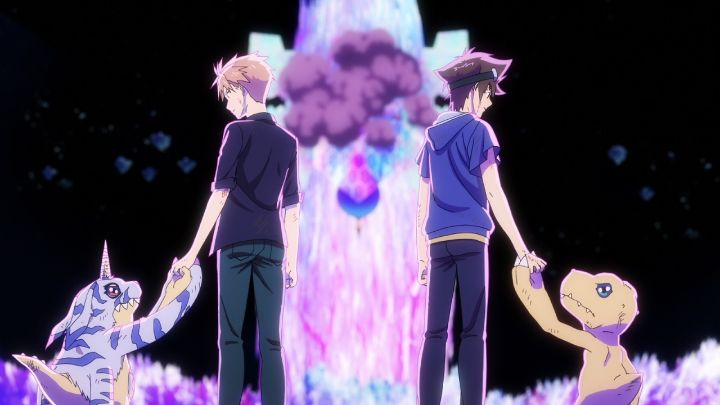

"Digimon Adventure Tri" released almost 20 years after the original "Digimon Adventure" TV series. Having grown up on the series, it was a dream come-true to see Tai, Matt, Izzy, Sora and the gang again, all with their cute Digimon pals... even though that 6-film series wasn't particularly good. All the same, it was a fun one-last-time celebration.... but the project was successful enough to immediately trigger a NEW final project: the feature film "Digimon Adventure - Last Evolution Kizuna" in 2020 (not including the full reboot TV series remake that followed shortly after). It happened to release in Japan just before the pandemic of 2020, so the American release didn't get the same fanfare, but for all intensive purposes, this is the final conlusion to the original 8 Digi-Destined. And compared to "Tri," it's mostly an improvement and worthwhile for old fans.The movie takes place with the cast finishing college, presumably not long after the events of "Tri." In the human world, there are still occasional events of wild Digimon running loose in cities, so Tai and Agumon, along with Matt, Izzy, Kari and TK, fight to protect the city when the need calls. But it doesn't pay the bills, and the cast are at an important crossroads in their lives. Some of the cast have already begun jobs, but Tai and Matt aren't sure about what they want to do yet. It's at this crucial time that they learn Digi-Destined from around the world are slowly falling into comas, triggered by a new Digimon that's stealing their souls and archiving them digitally. In an adventure to find the cause and save everyone, the cast learns about the true reason Digimon partner with children to begin with (a clever reframing for the entire franchise): they have untapped potential that represents incredible energy to power them. When they enivitably grow up, that energy fades, and the Digimon always move on. And it appears this is happening to Tai: is he not far from the ending to his adventure?If you haven't watched "Tri," there are almost no references to it, so you won't miss anything, which is nice. The biggest loss from that is the "first-time-in-decades-reveal" of Tai and Agumon meeting each other again; here, they're working together from the start, and there's no hint that they ever separated, despite previous story canon. Notably, Tai's personality reversal in "Tri" (more hesitant to act) is ignored, and this movie shows him as I expect him to be. Stylistically and story-wise, "Kizuna" feels like a natural mix of the original series, "Tri," and the old 2000 film (namely the "Our War Game!" segment from Mamoru Hososa). Also, the "Adventure 02" series.Yes, that's right: the cast of "02" (including Davis and the rest) return here, in roles almost as significant as the "01" cast. "Tri" referenced them too, but didn't ever show their faces or voices, almost as if it was a copyright-issue. Since the two series are in the same universe, it's nice to have them appear again. I did watch "02" as a kid, but I admit I've forgotten most of it, and don't have as strong a bond to that cast. Which is kind-of a problem, since "Kizuna" assumes you do remember who all the obscure characters were from both series. It should be obvious, but like "Tri," "Kizuna" is for existing fans only.Seeing the characters as fledgling adults is a little off-putting at times: I don't know how I feel about seeing Tai work part-time at a Casino, having porn stashed under his bed, or being in a school program where he has to write a thesis (he never seemed that smart). Or Matt going amateur-spy to uncover the scientists that recruited them on the mysterious coma cases. And the references to so many characters ensures that some of your favorites won't get a chance to shine: some of them don't even get speaking roles in the movie. There's not quite enough time or direction to emotionally resonnate with a story that should matter to fans. But admittedly, I was gripped in the climatic battle in the final third of the movie, featuring the common but satisfying trope of a villain that's gone mad with purpose. The fight has some traumatizing moments; it's not quite "Digimon" meets "Madoka Magica," but to even suggest the comparison would have been unthinkable had I not watched it. At one point, the characters outright yell that they can't "hide in their past memories," and "the importance of growing up," an on-the-nose moral spoken directly to the adults, now in their 30's, who're still paying for this content. That ending act made the movie worth watching, enough so for me to almost be willing to watch an extended, more fleshed-out version of the movie's story.Visually, "Kizuna" takes elements from both "Tri" and "Our War Game" (as previously mentioned), and looks like a proper modern rendition of the old characters, consistent in style (although I did slightly prefer the brief stylistic action moments in "Tri"). Animation is also more consistent and acceptable this time around. The music soundtrack still feels like an afterthought though, so the production comes across more as a glorified OVA than a proper movie.The English dub had a lot to go through this time: the returning cast was larger, and the actors worked from home due to 2020 being 2020. Most of the actors from "Tri" return, including the original franchise actors for Tai, Agumon, Izzy, Gabumon and Tentomon. Matt, one of the lead characters after Tai, gets recast a third time here (despite the original actor stating he was already disappointed to be left out of "Tri"), and while the new actor sounds closer to the original, the actual "acting" was a little off. A few other actors also got swapped, and with a cast this big, it seemed unavoidable. Acting across the board was a little wooden, and lines a little clunky, as if everyone was working with little direction, just to get the thing out the door (or that the original production thought they were being deep with lines like "The more that people accept the future chosen for them, the less they will age. We will do anything to reach higher heights." (?!?!)). Even so, the nostalgia factor insisted I watched the dub.Is "Digimon Adventure - Last Evolution Kizuna" an obvious cash-grab after confirming there's money to be made in nostalgic fans of the original series of the franchise? Absolutely. And I won't be surprised if we get dozens of similar movies in the years to come, from this franchise and many others (maybe a "Beyblade" film next?). "Kizuna" isn't quite long enough to take advantage of all the characters or to properly let emotions resonate, and a bit too long for the simplistic story it's telling. But the kid inside me still got excited near the ending. and the adult in me understood what the movie was telling me. There are some great moments to salvage here, so it might be worth watching for fans who are curious to see these old friends one last time, to celebrate the 20th anniversary of the franchise.Also, the Bluray from Shout Factory has a fantastic interview with Joshua Seth (Tai) and Tom Fahn (Agumon), reflecting on the new movie and their experience from 20 years prior. That alone is worth owning the movie for.
- "Ani" More reviews can be found at : https://2danicritic.github.io/ Previous review: review_Devilman_-_The_Birth,_Demon_Bird_Sirene Next review: review_Digimon_Adventure_Tri